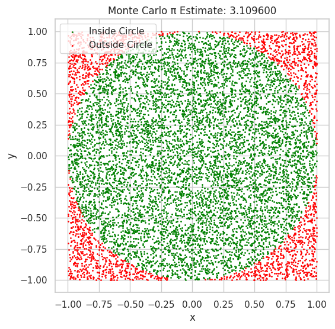

Problem 2
✅ PART 1: Estimating π Using a Circle
1. Theoretical Foundation
🔹 Geometric Intuition Behind Estimating π
Monte Carlo simulation allows us to estimate π by randomly sampling points in a known geometric space. Here's the basic idea:
- Imagine a unit circle (radius \(r=1\)) centered at the origin.
- This circle fits perfectly inside a square with side length 2, extending from \(-1\) to \(1\) on both axes.
- The area of the circle is: $$ A_{\text{circle}} = \pi r^2 = \pi (1)^2 = \pi $$
- The area of the square is: $$ A_{\text{square}} = (2r)^2 = (2)^2 = 4 $$
- The ratio of the areas is: $$ \frac{A_{\text{circle}}}{A_{\text{square}}} = \frac{\pi}{4} $$
🔹 Using Random Points to Estimate π
We generate random points \((x, y)\) uniformly in the square \([-1, 1] \times [-1, 1]\).
- A point lies inside the unit circle if: $$ x^2 + y^2 \leq 1 $$
- Let:
- \(N\): total number of points generated
-
\(N_{\text{circle}}\): number of points inside the circle
-
The ratio: $$ \frac{N_{\text{circle}}}{N} \approx \frac{\text{Area of Circle}}{\text{Area of Square}} = \frac{\pi}{4} $$
🔹 Final Formula to Estimate π
Rearranging the above equation: $$ \frac{N_{\text{circle}}}{N} \approx \frac{\pi}{4} \quad \Rightarrow \quad \pi \approx 4 \cdot \frac{N_{\text{circle}}}{N} $$
✅ Summary
- By sampling random points in a square and counting how many fall inside the inscribed circle, we can estimate π.
- The more points we use, the better the approximation (due to the Law of Large Numbers).
🧪 PART 1: Simulation – Estimating π Using a Unit Circle
This section simulates the Monte Carlo method to estimate π.
We will:
- Generate random points in a square bounding the unit circle.
- Count how many points fall inside the circle.
- Estimate π using the formula:
🧪 PART 1: Simulation – Estimating π Using a Unit Circle
This section simulates the Monte Carlo method to estimate π.
We will:
- Generate random points in a square bounding the unit circle.
- Count how many points fall inside the circle.
- Estimate π using the formula:
🟢 Visualization
We now plot the points:
- Green: inside the circle
- Red: outside the circle
 ```python
Plotting
plt.figure(figsize=(6, 6))
plt.scatter(x[inside_circle], y[inside_circle], color='green', s=1, label='Inside Circle')
plt.scatter(x[~inside_circle], y[~inside_circle], color='red', s=1, label='Outside Circle')
plt.gca().set_aspect('equal')
plt.title(f"Monte Carlo π Estimate: {pi_estimate:.6f}")
plt.xlabel("x")
plt.ylabel("y")
plt.legend()
plt.grid(True)
plt.show()
````